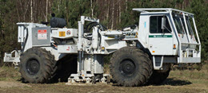
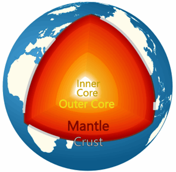
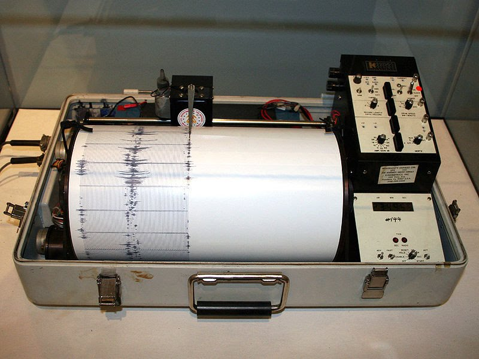
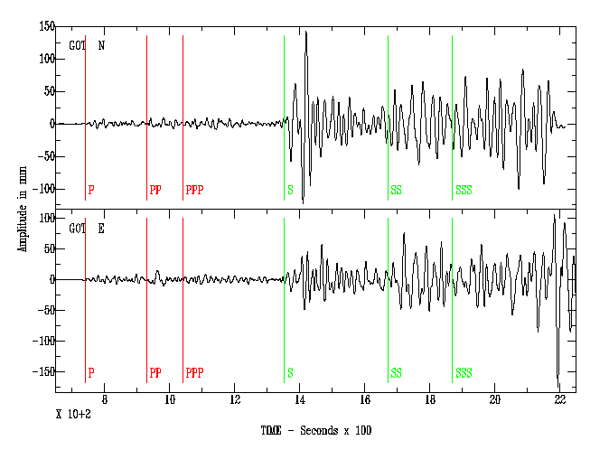
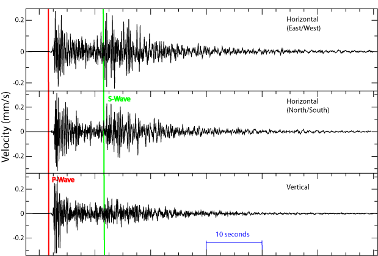
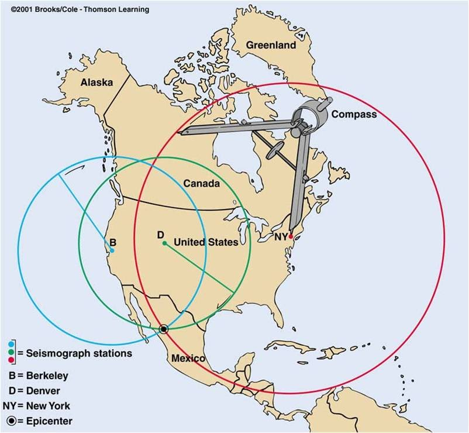

Seismic Waves
Seismic waves travel through the earth. They are caused by:
- Earthquakes
- Large explosions
- Some mining works
- Atomic blasts
- etc

This truck vibrates the ground!
The waves can be detected some distance away
and tell us about the structure of the ground.
Learning from Seismic Waves
Earthquakes are extremely powerful and can travel great distances.
They are destructive, but have also helped us learn that the earth is made of a crust, mantle and outer and inner core as shown here:

The Earth has different zones.
Scientists have studied how the earth reacts to wave movement. Patterns of wave motion provide information about the properties and structure of earth’s materials.
Waves created by people (through explosions or impact) are used to draw pictures of the internal structure and layering underground, and are useful in locating potential oil wells.
The different zones affect how seismic waves travel. Waves show different motion patterns as they move from one zone to the next, thus allowing zones to be located, described, and their depths determined.
Body Waves
When seismic waves are first created, they travel outwards in all direction from their source.
Body waves travel through the interior of the earth, and have two main types:
- P-Waves (Primary waves) are Longitudinal Waves.
- S-Waves (Secondary waves) are Transverse Waves.
P-Waves are fastest at about 6 km/s (kilometers per second) and arrive first.
They can travel through solids, liquids, and gases and pass right through the Earth in a special pattern.
S-Waves are slower at about 3.6 km/s and arrive second.
They can only pass through solids and so cannot pass through the earth’s liquid core.
Scientists noticed that seismic stations on opposite sides of the earth would never receive S-waves (giving evidence that the outer core is in fact a liquid).

Timing when each wave arrives at a seismic station can help locate an earthquake.
Surface Waves
There are two main types of surface waves:
- Love Waves, which move the ground from side-to-side. They are the fastest surface wave.
- Rayleigh Waves, which roll along the ground like an ocean wave.
Seismograph
Seismographs record the arrival of earthquake waves. They operate using a shock absorbing or dampening system that allows a stabilized marker or pencil to chart the motion of the waves on paper (set on a rotating drum). The seismograph records the time of the arrival of the different types of waves. It also shows differences in their wave heights (called amplitude). The patterns in wave data is critical in determining the nature and location of the earthquake.

When an earthquake occurs, the drum moves with the motion of the ground while rotating the paper. The marker is independent of this movement and records the pattern of motion as the paper/drum rotates underneath it. Pictured below is a sample seismograph (from the 1906 earthquake that hit San Francisco, USA). Notice the arrival of the P and S waves.

Here is another seismograph showing surface waves, and with marks showing when the P-Wave and S-Wave arrived:

Image courtesy Wikipedia user Crickett
Timing when each wave arrives at a seismic station can help locate an earthquake. Once seismologists have the arrival times of earthquake waves from at least three stations, they can work backwards to determine the point of the epicenter. First, they find the P and S wave arrival times from three stations. The difference between the P and S arrival time for each station is matched with a distance on a travel-time graph (as below). The time interval can be found on the vertical axis of the graph, then held vertically and slid outward until it touches the S and P wave lines. Extrapolating down to the horizontal axis would give the distance of the station from the earthquake.

This distance however, could be in any direction from the station. The earthquake's epicenter is found by finding the intersection point of three circles, each drawn around its station at a radius equal to the distances found from the P and S wave arrival times.

The point of intersection of the three circles indicates where the earthquake originated.